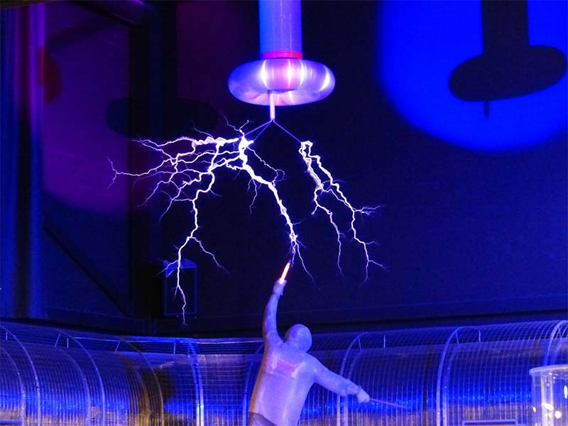

La palabra física proviene del vocablo griego fisis que significa “naturaleza”. Es la ciencia que estudia las propiedades de los cuerpos y las leyes que rigen las transformaciones que afectan a su estado y a su movimiento, sin alterar su naturaleza. Es decir, la ciencia encargada de analizar las transformaciones o fenómenos físicos; por ejemplo, la caída de un cuerpo o la fusión de un hielo. La física es la ciencia más fundamental, está estrechamente relacionada con las demás ciencias naturales, y en cierto modo las engloba a todas. La química, por ejemplo, se ocupa de la interacción de los átomos para formar moléculas; gran parte de la geología moderna es en esencia un estudio de la física de la Tierra y se conoce como geofísica; y la astronomía trata de la física de las estrellas y del espacio exterior.
Los físicos orientan todos sus esfuerzos hacia el descubrimiento de las leyes que rigen el comportamiento de los objetos en el universo y para ello se sirven de toda una serie de símbolos, sistemas de unidades, ecuaciones, principios y definiciones. Todos los medios que se emplean en el proceso de elaboración de una ley física, siempre fundada en la relación entre un determinado fenómeno y su causa, son ideados y regidos por la llamada física teórica. La física experimental, por el contrario, centra sus premisas en la observación, el estudio racional y la comprobación de una serie de hechos y datos referidos a un fenómeno concreto.
Aunque las ideas sobre el mundo físico se remontan a la antigüedad, el estudio sistemático de la física puede situarse en la segunda mitad del siglo XVI, con los primeros experimentos de Galileo. En aquellos años y durante los dos siglos siguientes se crearon los métodos básicos de estudio, que dieron lugar al desarrollo de las que más tarde sería conocida como física clásica, basada esencialmente en los conceptos intuitivos de tiempo y espacio y válida solamente en el ámbito macroscópico (movimiento, fluidos, calor, sonido, luz, electricidad y magnetismo).
La física moderna, en cambio, agrupa ciertas facetas de la ciencia no determinables en el tiempo y en el espacio y válida en el ámbito microscópico, tales como la teoría de la relatividad de Einstein o los postulados de la mecánica cuántica de Planck. La física por lo general presenta muchas áreas de investigación como lo son acústica, electromagnética, mecánica, óptica, termodinámica, atómica, nuclear, mecánica cuántica, materia condensada, biofísica, cosmología y astrofísica.
{kind=link}